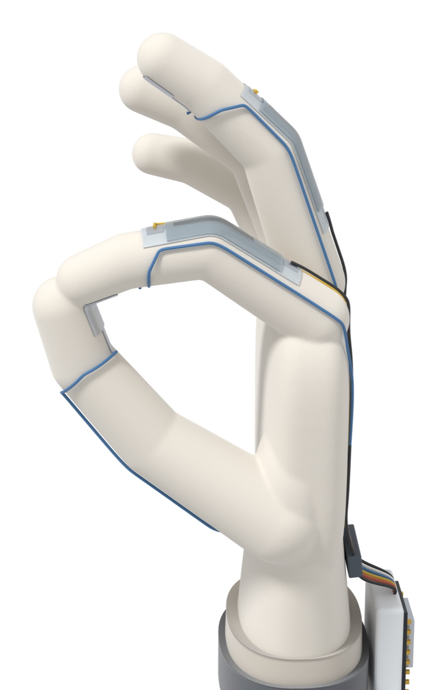
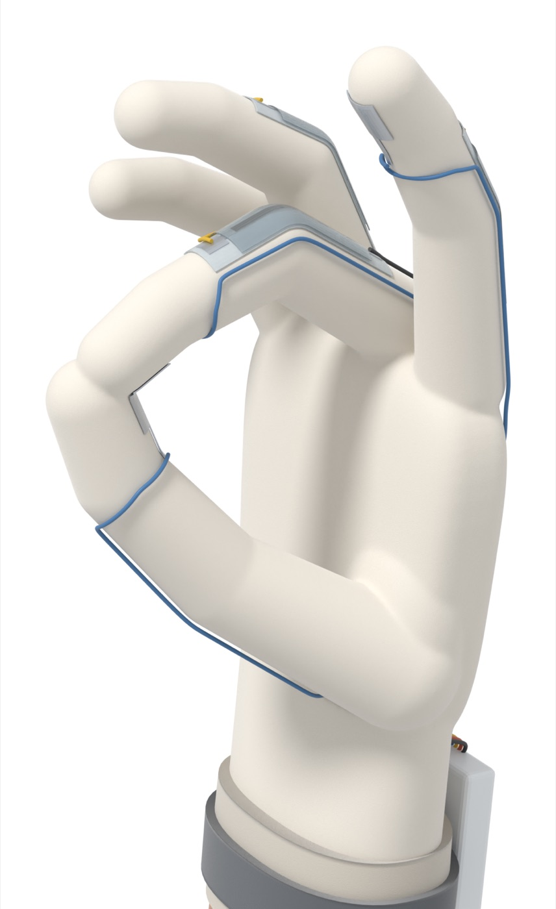
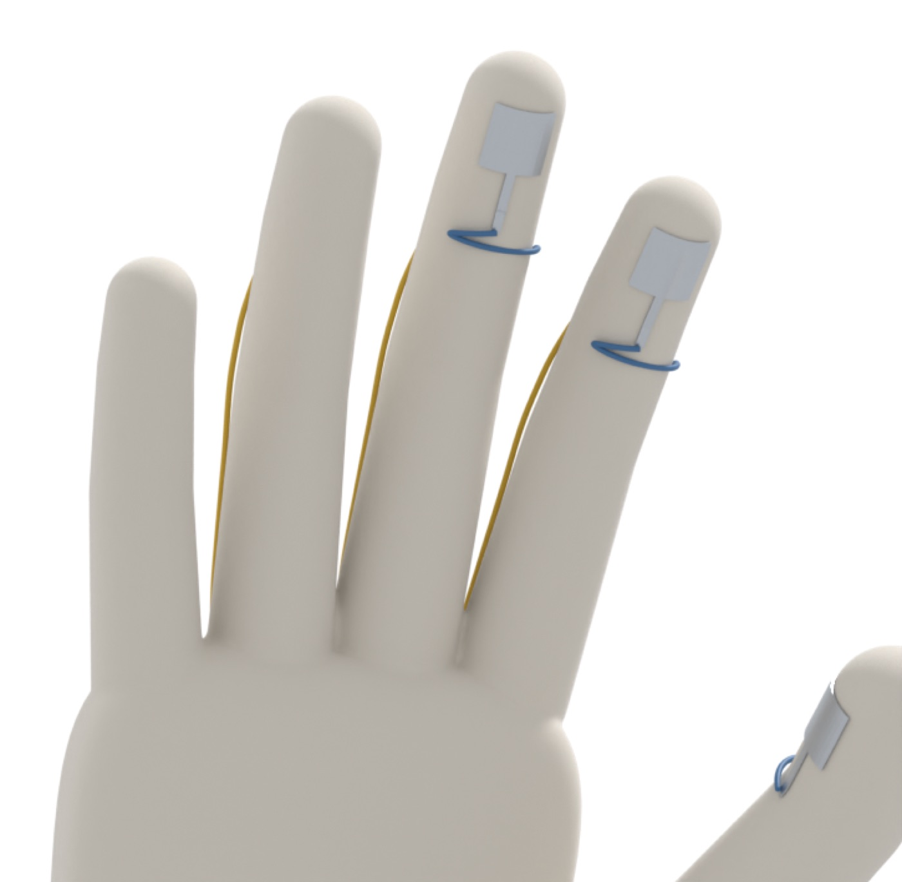
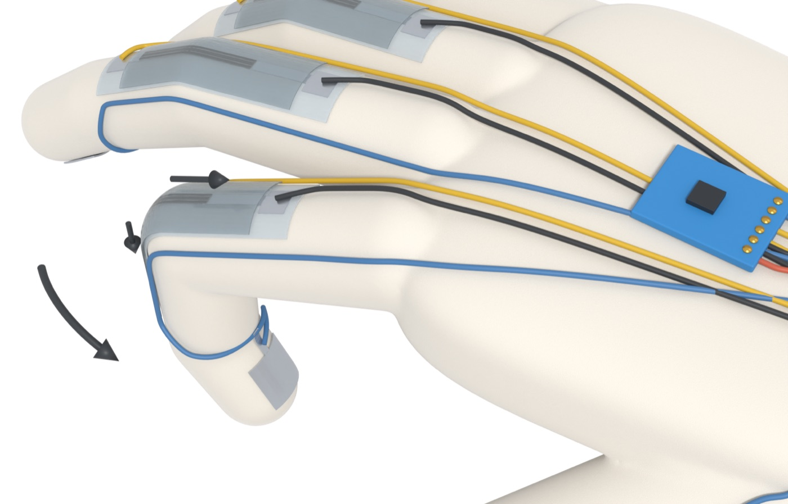
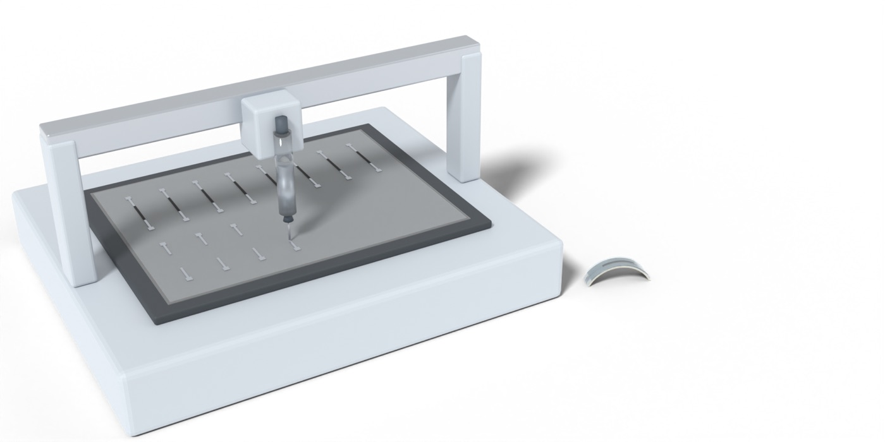

ECE 4600 capstone · Printed electronics · Team G15 · in progress
A glove that works as a mouse
Tap your thumb to your index finger to left-click, to your middle finger to right-click, and tilt your hand to move the cursor. The sensors are silver and carbon inks printed on stretchable TPU film with a Voltera NOVA.
Six-person capstone at the University of Manitoba, supervised by Dr. Cyrus Shafai. My part is sensor fabrication and hardware design: printing the silver and carbon sensors and designing the glove’s electronics. The design is at the concept stage: the 3D models on this page are what we’re building toward, not finished hardware.
Drag to rotate · scroll or pinch to zoom · Blender models, conceptual, not to scale
From a finger tap to a click
SIGNAL PATH- Thumb taps a finger, or a finger bends.
- A silver pad closes, or a carbon sensor stretches.
- The change in resistance is read as a voltage.
- An ESP32-S3 on the wrist reads the signals.
- It talks to the PC over USB, as a mouse.
- The PC registers a click or a cursor move.
Cursor movement comes from a motion sensor (IMU) on the wrist: tilt the hand and the pointer follows.
Gestures
INPUT MAP| Gesture | Action |
|---|---|
| Thumb + index tap | Left click |
| Thumb + middle tap | Right click |
| Tilt hand | Move cursor |
| Hold a fist for 1 s | Cursor on / off |
Success targets
PASS / FAIL| Metric | Target |
|---|---|
| Taps detected | ≥ 97% |
| False clicks | ≤ 1 per 10 minutes |
| Tap-to-click delay | ≤ 50 ms |
| Users tested | ≥ 3 |



The printed sensor
MATERIALSEach bend sensor is a strip of carbon ink between silver leads, printed on stretchable TPU film and glued over a knuckle. When the joint bends, the film stretches, the carbon path gets longer and thinner, and its resistance should rise. Measuring how much, and how repeatably, is the first job for the printed test strips.
The fingertip pads are plain silver ink. They don’t sense anything on their own: touching thumb to finger closes a circuit, which is the click.
Layer thicknesses in the model are exaggerated.
- Encapsulation (protective coating)
- Wire bonded to a silver pad
- Carbon sensing element
- Silver leads and pads
- Stretchable TPU substrate
- Adhesive layer
- Glove fabric


Animation
BLENDERRendered in Blender from the same models as the viewer above.
Plan
2026–27- OctCopper-tape test glove, to check clicks and cursor control before printing anything
- NovPrint silver and carbon strips and bend-test them (design review 2)
- JanA repeatable sensor batch and glove v1 (design review 3)
- FebTest against the targets above (design review 4)
- AprFinal demo
Resources: Voltera NOVA, silver and carbon inks, TPU film, ESP32-S3, 6-axis IMU, ADC. Budget $600 including tax and shipping.
Sensor layout, sizes and wire routing on the glove are not final. The microcontroller, the wired USB link and the fingertip pads are proposals at this stage. The models were built in Blender for the design review.